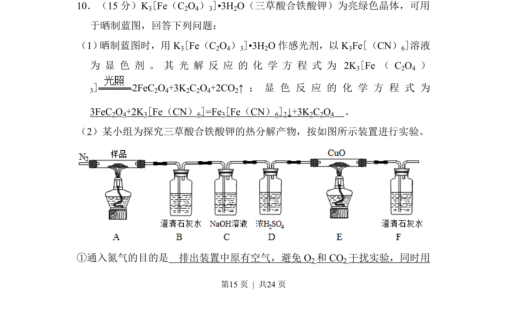
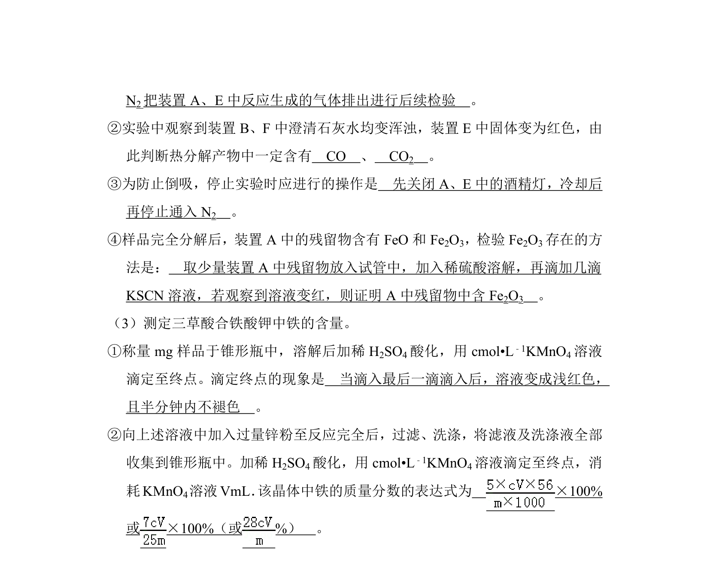
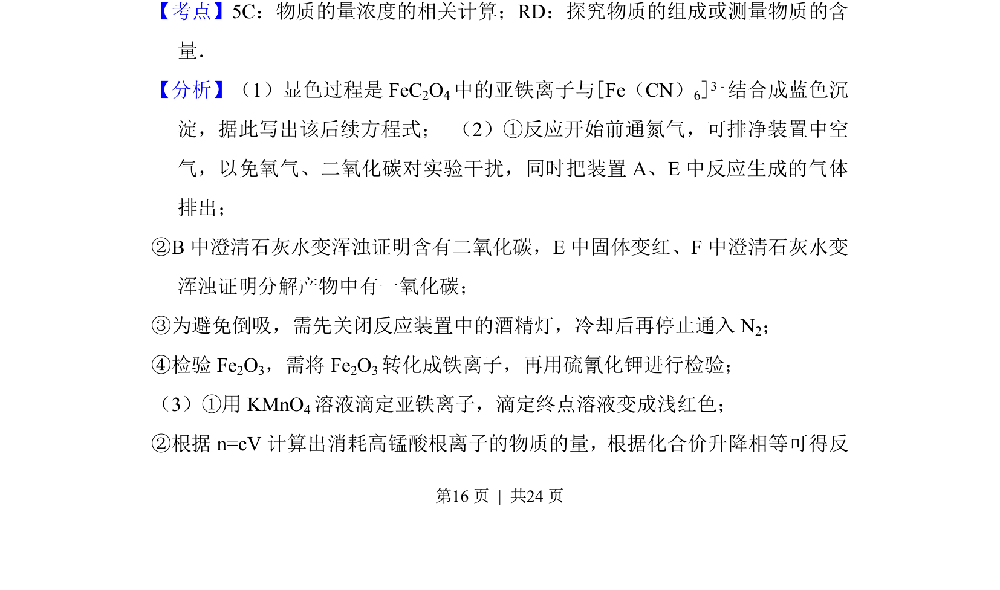
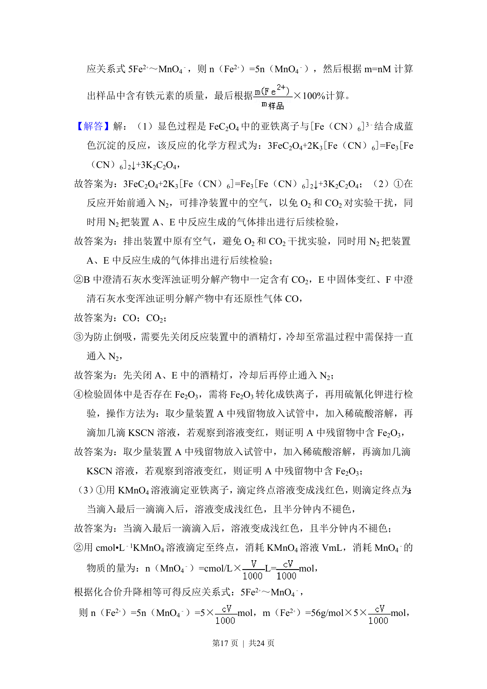
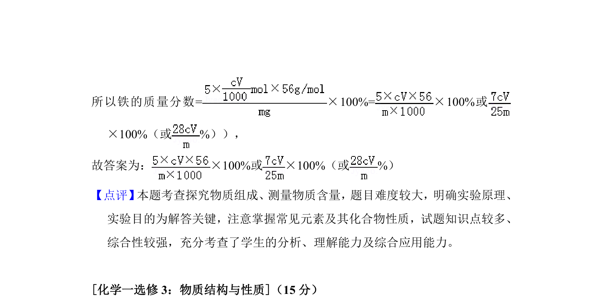

考点：化学方程式书写 热分解实验 实验操作与安全


考查三草酸合铁酸钾的光解与显色反应书写、热分解实验设计



📄 原 PDF 第 15 页：
素材/真题/吉林/2008-2024·（吉林）化学高考真题/2018年高考化学试卷（新课标Ⅱ）（解析卷）.pdf
10．（15分）K 3[Fe（C2O4）3]•3H2O（三草酸合铁酸钾）为亮绿色晶体，可用 于晒制蓝图，回答下列问题： （1） 晒制蓝图时，用K3[Fe（C2O4）3]•3H2O作感光剂，以K 3Fe[（CN）6]溶液 为 显 色 剂 。 其 光 解 反 应 的 化 学 方 程 式 为2K3[Fe（C 2O4 ） 3]2FeC 2O4+3K2C2O4+2CO2↑； 显 色 反 应 的 化 学 方 程 式 为 3FeC2O4+2K3[Fe（CN）6]=Fe3[Fe（CN）6]2↓+3K2C2O4 。 （2）某小组为探究三草酸合铁酸钾的热分解产物，按如图所示装置进行实验。 ①通入氮气的目的是 排出装置中原有空气，避免O 2和CO 2干扰实验，同时用